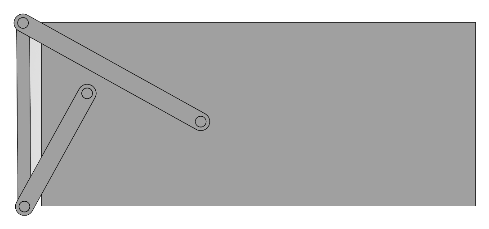
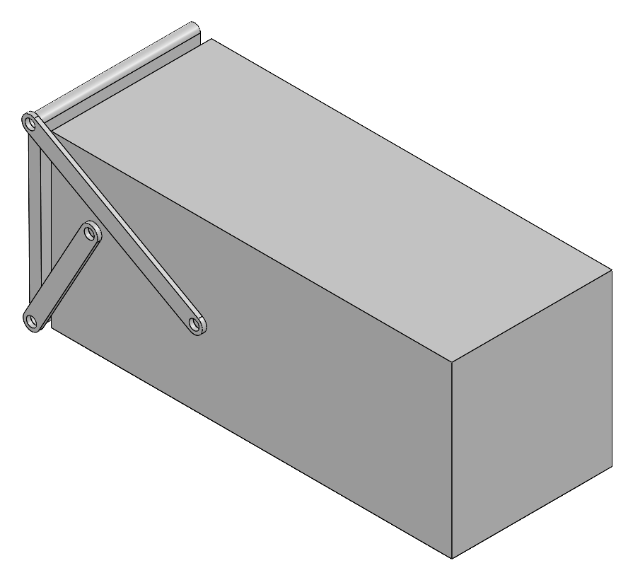
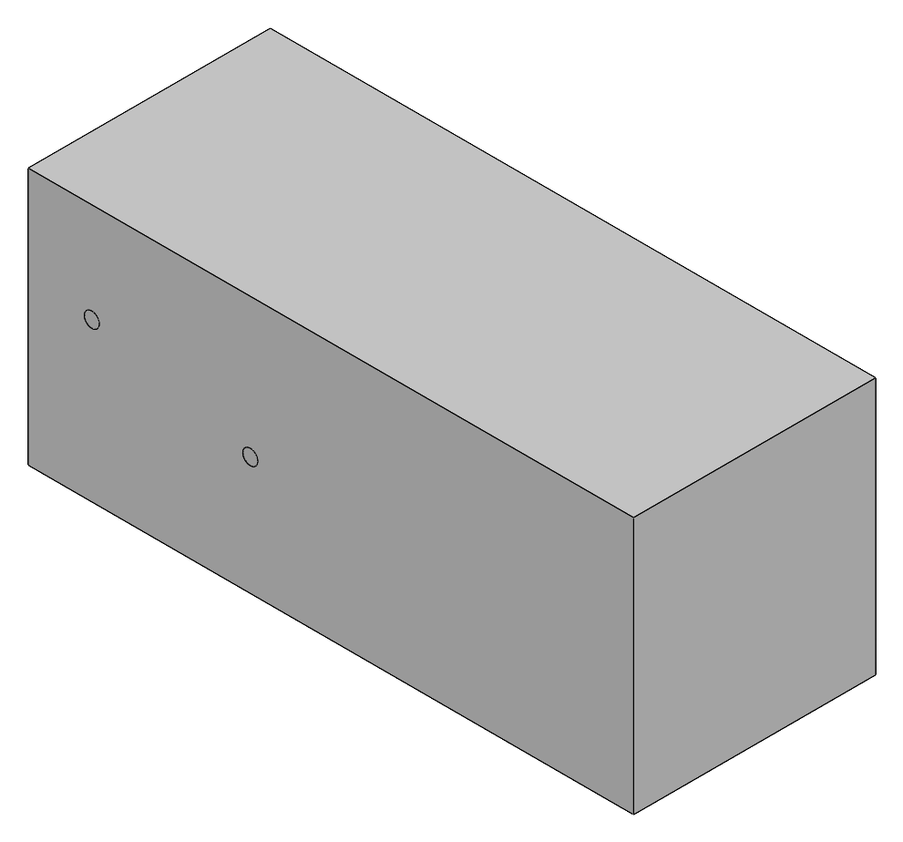
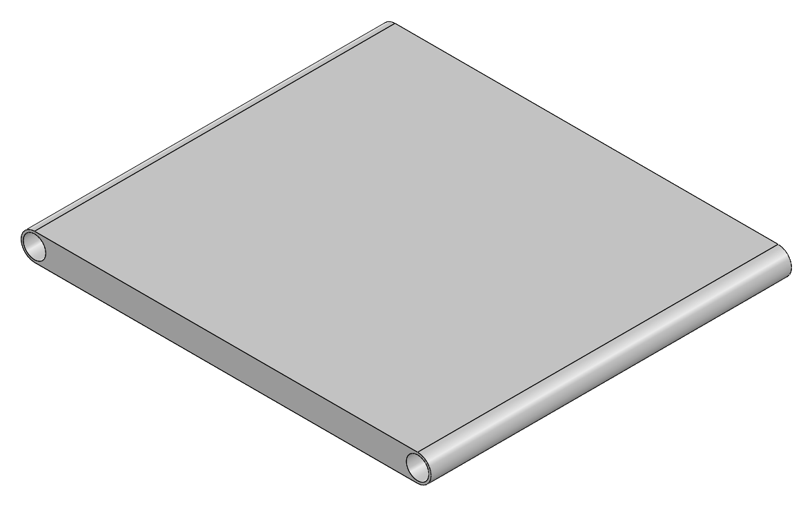
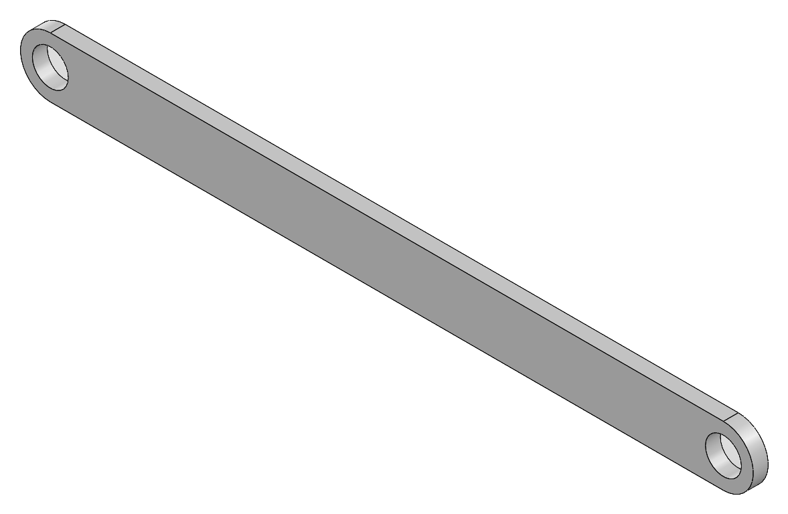
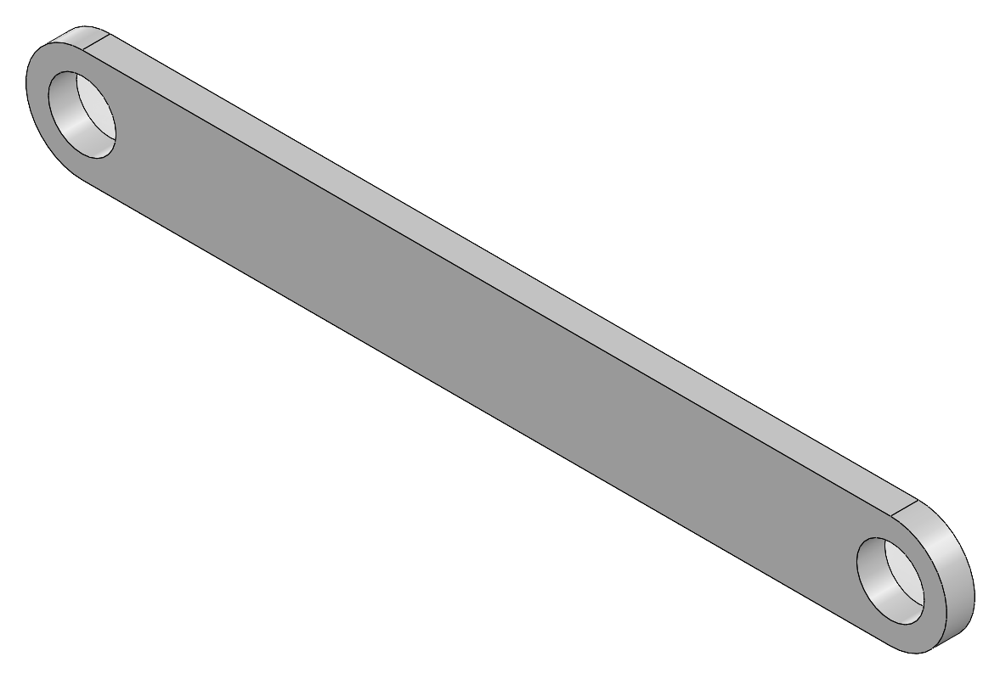

Class Exercise · Electromechanical Design
Shipping Container Door Mechanism

Project overview
Moving A Door From The End To The Roof.
In a class exercise, I designed a door for a standard ISO shipping container and a four-bar linkage that swings it from the end opening up onto the roof without passing through the container.
I researched the standard container dimensions and used Math Illustrations to work out the mechanism’s dimensions. I then modeled the container, door, and links in SolidWorks, assembled them, and animated the door moving between its two positions.
| Step | Tool |
|---|---|
| Container and mechanism dimensions | Math Illustrations |
| Part models and assembly | SolidWorks |
| Motion animation | SolidWorks |
Key Work & Outcomes
- Modeled a standard 20 ft ISO container at its real size: 6,096 × 2,438.4 × 2,590.8 mm (20 × 8 × 8.5 ft).
- Designed a full-size door to close the 2,438.4 × 2,590.8 mm end opening.
- Linked the door to the container with two rods, making a four-bar linkage with one degree of freedom.
- Animated the door moving from the end of the container to its roof without passing through the body.
The brief
Two Positions, One Rule
The door has to move between two positions: standing across the end of the container, and lying flat on top of it.
| Requirement | How the design meets it |
|---|---|
| Use the dimensions of a standard ISO shipping container | The container is modeled at the standard 20 ft size |
| Design a door for the end of the container | A door sized to the full 8 × 8.5 ft end opening |
| Move the door between the closed and roof positions | Two rods pinned to the container’s side wall carry the door between the two positions |
| Never pass through the body of the container | The door swings up and over the top front edge, staying outside the container the whole way |
The mechanism
A Four-Bar Linkage
The container is the fixed link, the two rods are the cranks, and the door is the coupler between them.
Each rod is pinned to the container’s side wall at one end and to the door at the other. Because the two rods pivot from different points on the container, the door does not just rotate about a single hinge: it lifts, tips back over the front edge of the roof, and settles flat on top. Working out the rod lengths and pivot locations so that the door reaches both positions without hitting the container was the core of the exercise.
| Link | Part | Role |
|---|---|---|
| Ground | Shipping container | Holds the two fixed pivots on its side wall |
| Crank 1 | “a” rod | Pivots from the container and supports the door |
| Crank 2 | “b” rod | Pivots from the container and supports the door |
| Coupler | Door | Carried between the two rods from the end to the roof |
CAD models
Modeled In SolidWorks
Every part is modeled at full scale in steel, then assembled with mates at each pivot.
| Part | Key dimensions |
|---|---|
| Shipping container | 6,096 × 2,438.4 × 2,590.8 mm (20 × 8 × 8.5 ft), hollow with a 2.54 mm (0.1 in) wall, two pivot holes on the side |
| Door | 2,438.4 × 2,590.8 mm to cover the end opening, with a pin tube along each edge for the rods |
| “a” and “b” rods | 63.5 mm (2.5 in) thick links with a pin hole at each end |





Animation
The Door In Motion
The SolidWorks animation shows the door lifting off the end of the container, passing over the top front edge, and coming to rest flat on the roof.
Continue exploring